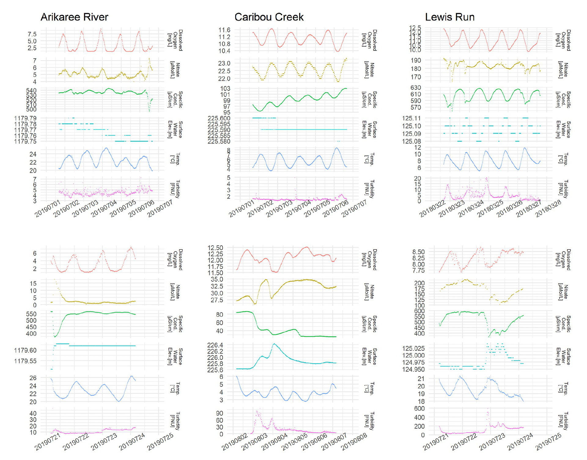
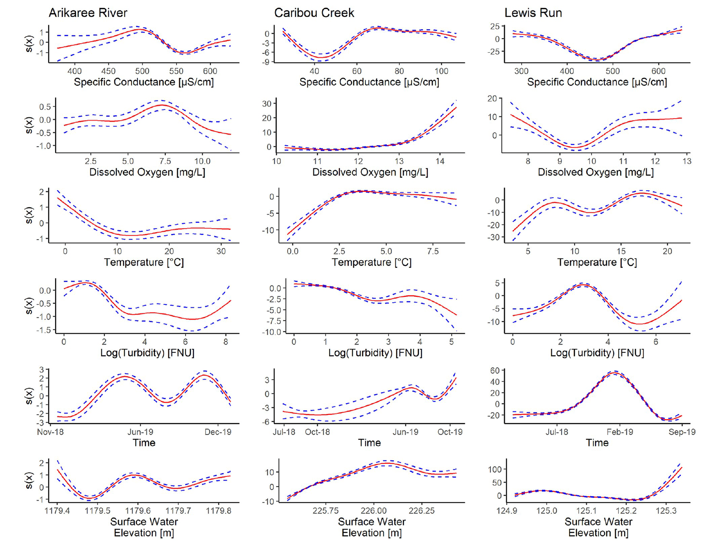

| Site | Location | Climate | Landscape | Typical Nitrate Level |
|---|---|---|---|---|
| Arikaree River | Colorado | Semi-arid | Grassland, agriculture | Low |
| Caribou Creek | Alaska | Subarctic | Subarctic taiga, discontinuous permafrost | Moderate |
| Lewis Run | Virginia | Temperate | Fields, pastures, woodlands, small ponds | High |
Do we really need a DNA test every time we need to prove that someone is related to their parents? A DNA test surely gives the most precise answer, but it also costs time and money. In many cases, simpler clues, like matching blood type, similar eye color, or shared facial traits, when it combined, already tell most of the story.
River scientists face a similar challenge, except theirs is about keeping up with change, nitrate levels can fluctuate by the minute, so measurements need to be nearly continuous. Nitrate is a vital nutrient that turns into a problem when there’s too much of it. Excess nitrate can trigger algal blooms, reduce oxygen levels, and disturb aquatic ecosystems, so tracking its movement through rivers is crucial.
🌊 The Challenge Beneath the Surface
The problem lies in measuring nitrate directly. Instruments like the SUNA V2 optical nitrate sensor, are expensive, maintenance-heavy, and record data only every 15 minutes. Although this rate is considered high-frequency compared with traditional sampling, it still misses short-term fluctuations that occur with rainfall or biological activity.
Meanwhile, rivers are already monitored by other high-frequency sensors that measure river water variables such as temperature, dissolved oxygen, conductivity, turbidity, and water level every minute. These sensors are cheaper, easier to maintain, and widely deployed. If their combined signals can be used to estimate nitrate accurately, scientists could track nitrate dynamics in near real time without depending solely on costly equipment.
That’s the problem explored by Kermorvant et al. (2023). Previous studies using Neural Networks, Random Forests, or GLMM focused mainly on prediction and struggled to explain underlying relationships. Here, the authors used Generalised Additive Mixed Models (GAMM) that is flexible enough to capture curved, site-specific patterns yet interpretable enough to reveal how each variable influences nitrate. Their approach points to a practical solution for one of water science’s problems: how to monitor nitrate continuously, affordably, and meaningfully.
🔍 Turning Ordinary Sensors Into Smart Ones
After framing the problem, the next step was to test whether simple, fast sensors could truly stand in for the costly nitrate instruments. To do this, Kermorvant et al. (2023) used open environmental data and advanced statistical modeling to explore how different water-quality variables interact with nitrate across a range of climates and landscapes.
Where the Data Came From
The study used data from the National Ecological Observatory Network (NEON), a U.S. research infrastructure that collects environmental data from diverse ecosystems. Three rivers were chosen to span semi-arid, subarctic, and temperate settings (Table 1). Each site had a SUNA V2 nitrate sensor (15-min) plus high-frequency (1-min) sensors for temperature, dissolved oxygen, specific conductance, turbidity, and water level.
Two Steps to Smarter Modeling
The modeling framework then was built in two steps:
1. Generalised Additive Models (GAM)
Nitrate was modeled as a non-linear function of time, temperature, dissolved oxygen, conductivity, turbidity (log-transformed), and surface water elevation.
Variable selection was guided by stepwise AIC and multicollinearity was checked using VIF.
2. ARIMA (Autoregressive Integrated Moving Average)
GAM residuals were modeled with ARIMA to capture temporal auto-correlation.
The optimal ARIMA model varied by site.
The final GAMM combined both components, providing robust and interpretable models of nitrate dynamics. The overall model framework can be expressed as follows:
\(Nitrate(t)=f(time,temperature,DO,conductance,log(turbidity),surface\ elevation)+ARIMA\ residuals\)
Here, \(f\) represents smooth non-linear functions estimated by the GAM. The ARIMA residual term models short-term temporal dependence in the series. Time appears as a covariate in the GAM to capture systematic cycles (diel or seasonal patterns), and as the time index \(t\) of the series, which ARIMA uses to describe correlations between consecutive observations.
The modeling might be computationally intensive, but it remains feasible with available tools and is suitable for applied monitoring.
What the Research Revealed
Temporal fluctuations
Sensor data revealed both daily diel cycles and responses to flow events (see Figure 1). For example, in Caribou nitrate and dissolved oxygen tended to rise during the day, whereas in Arikaree nitrate declined. During flow events, nitrate increased with rising elevation in Arikaree but decreased in Lewis Run.

Non-linear relationships
The GAM analysis highlighted non-linear and site-specific relationships (see Figure 2). In Caribou, temperature correlated positively with nitrate, while conductivity correlated negatively. In Arikaree, temperature showed a weak negative influence. In Lewis Run, almost all variables were influential, with mostly positive relationships.

Variable importance
Deviance explained indicated that the relative importance of variables differs among sites (see Figure 3). In Arikaree, water-quality variables contributed little (<5%) while the ARIMA component explained about 25% of the variance. In Caribou, specific conductance was dominant (~10%). In Lewis Run, all variables contributed significantly (11–15%), with conductance again strongest.

Model performance
As shown in Table 2, the analysis directly addressed the problem of relying on costly nitrate sensors by testing how well common, faster measurements could reproduce the same signal.
Using GAM alone, the model explained about 75–85% of the variation in nitrate concentration, indicating that non-linear relationships among affordable, high-frequency variables already capture most of the nitrate behavior.
However, the remaining differences revealed short-term temporal fluctuations that these models could not fully describe. By adding the ARIMA component to handle this time-based dependence, the combined GAMM improved substantially—explaining up to 99% of nitrate variation and closely matching the performance of direct nitrate measurements.
| Site | GAM Performance | GAMM Performance | Improvement |
|---|---|---|---|
| Arikaree River | 75% | 99% | +24% |
| Caribou Creek | 83% | 99% | +16% |
| Lewis Run | 85% | 99% | +14% |
Approximate AIC values were consistently lower for GAMM than for GAM, confirming that the improvement reflected a better model, not just extra complexity. In short, including the temporal component made the models both more accurate and more reliable.
💡 Conclusion
This study shows that Generalised Additive Mixed Models (GAMM) offer a practical way to address the long-standing problem of monitoring nitrate continuously and affordably. By combining data from fast, low-cost sensors with an interpretable statistical framework, the approach reduces dependence on expensive nitrate instruments like the SUNA V2, while still capturing near-real-time nitrate dynamics.
The results demonstrate that GAMM can explain most of the variation in nitrate using only common water-quality variables such as temperature, oxygen, conductivity, turbidity, and water level. Because the method remains transparent and adaptable, it can be recalibrated for new sites and used to fill gaps when nitrate sensors fail or are unavailable.
For organizations or agencies managing water resources, this framework could be integrated into existing monitoring networks. Testing the model with local data would help refine variable relationships and confirm its suitability for regional conditions — ultimately supporting broader, data-driven strategies for managing river health and water quality.
📚 References
Kermorvant, C., Liquet, B., Litt, G., Hyndman, R. J., Peterson, E. E., Leigh, C., & Mengersen, K. (2023). Understanding links between water-quality variables and nitrate concentration in freshwater streams using high frequency sensor data. PLOS ONE, 18(6), e0287640. https://doi.org/10.1371/journal.pone.0287640